Plasma physics
By Alan Kaptanoglu, with some edits by Brian de Silva

This example is based off of the paper “Kaptanoglu, A. A., Morgan, K. D., Hansen, C. J., & Brunton, S. L. (2021). Physics-constrained, low-dimensional models for magnetohydrodynamics: First-principles and data-driven approaches. Physical Review E, 104(1), 015206.” The preprint can also be found here. Below, we build a data-driven dynamical system model for the temporal POD modes from an isothermal Hall-magnetohydrodynamic (Hall-MHD) plasma simulation of the HIT-SI experiment at the University of Washington.
This notebook shows off some advanced PySINDy features that were useful for this work:
Initial guesses to the SINDy optimization object
SR3 algorithm with linear equality constraints (see this preprint)
Matrix of thresholds, implemented for
SR3and all its variants (ConstrainedSR3,TrappingSR3,SINDyPI). It also shows how to compute and plot a pareto curve mapping out the tradeoff between model complexity and accuracy.
Setup
[1]:
import warnings
from scipy.integrate.odepack import ODEintWarning
warnings.simplefilter("ignore", category=UserWarning)
warnings.simplefilter("ignore", category=RuntimeWarning)
warnings.simplefilter("ignore", category=ODEintWarning)
import matplotlib.pyplot as plt
import numpy as np
import seaborn as sns
import pysindy as ps
[2]:
def pareto_curve(
optimizer,
feature_library,
differentiation_method,
feature_names,
discrete_time,
thresholds,
x_fit,
x_test,
t_fit,
t_test,
energies,
):
"""
Function which sweeps out a Pareto Curve in (r, lambda)
Parameters
----------
optimizer : optimizer object, optional
Optimization method used to fit the SINDy model. This must be a class
extending :class:`pysindy.optimizers.BaseOptimizer`.
The default is :class:`STLSQ`.
feature_library : feature library object, optional
Feature library object used to specify candidate right-hand side features.
This must be a class extending
:class:`pysindy.feature_library.base.BaseFeatureLibrary`.
The default option is :class:`PolynomialLibrary`.
differentiation_method : differentiation object, optional
Method for differentiating the data. This must be an object that
extends :class:`pysindy.differentiation_methods.BaseDifferentiation`.
Default is centered difference.
feature_names : list of string, length n_input_features, optional
discrete_time : boolean, optional (default False)
If True, dynamical system is treated as a map. Rather than predicting
derivatives, the right hand side functions step the system forward by
one time step. If False, dynamical system is assumed to be a flow
(right hand side functions predict continuous time derivatives).
thresholds: array of floats
The list of thresholds to change the number of terms available to the
SINDy model, generating a Pareto curve.
x_fit: array-like or list of array-like, shape
(n_samples, n_input_features)
Training data.
x_test: array-like or list of array-like, shape
(n_samples, n_input_features)
Testing data.
t_fit: array of floats
Time slices corresponding to the training data.
t_test: array of floats
Time slices corresponding to the testing data.
energies: array of floats
Singular values of the data
"""
model_scores = []
non_zeros_coeffs = []
x_err = []
xdot_err = []
integrator_keywords = {}
integrator_keywords['rtol'] = 1e-20
integrator_keywords['h0'] = 1e-5
# Loop over the threshold values of interest
for j in range(len(thresholds)):
optimizer.threshold = thresholds[j]
model = ps.SINDy(
optimizer=optimizer,
feature_library=feature_library,
differentiation_method=differentiation_method(drop_endpoints=True),
feature_names=feature_names,
discrete_time=discrete_time,
)
# Compute predicted X and Xdot
model.fit(x_fit, t=t_fit, quiet=True)
x0 = x_test[0, :]
x_sim = model.simulate(
x0,
t_test,
integrator="odeint",
integrator_kws=integrator_keywords,
)
xdot_test = model.differentiate(x_test, t=t_test)[1:-2]
xdot_sim = model.predict(x_test)[1:-2]
# Compute normalized Frobenius error of X and Xdot on the "testing" data
x_err.append(np.sqrt(np.mean(np.mean((x_test - x_sim) ** 2,
axis=0) * energies**2)
/ np.mean(np.mean(x_test ** 2,
axis=0) * energies**2)))
xdot_err.append(np.sqrt(np.mean(np.mean((xdot_test - xdot_sim) ** 2,
axis=0) * energies**2)
/ np.mean(np.mean(xdot_test ** 2,
axis=0) * energies**2)))
num_coeff = len(np.ravel(model.coefficients()))
num_nonzero_coeff = np.count_nonzero(model.coefficients())
non_zeros_coeffs.append(num_nonzero_coeff / num_coeff * 100)
model_scores.append(
min((1 - min(model.score(x_test, t=t_test), 1)) * 100, 100)
)
# Save the errors and other metrics of model performance to file
errs = np.zeros((len(model_scores), 5))
errs[:, 0] = non_zeros_coeffs
errs[:, 1] = thresholds
errs[:, 2] = model_scores
errs[:, 3] = x_err
errs[:, 4] = xdot_err
return errs
[3]:
cmap = plt.get_cmap("Set1")
def plot_trajectories(x, x_train, x_sim, n_modes=None):
"""
Compare x (the true data), x_train (predictions on the training data),
and x_sim (predictions on the test data).
"""
if n_modes is None:
n_modes = x_sim.shape[1]
n_rows = (n_modes + 1) // 2
kws = dict(alpha=0.7)
fig, axs = plt.subplots(n_rows, 2,
figsize=(12, 2 * (n_rows + 1)),
sharex=True)
for i, ax in zip(range(n_modes), axs.flatten()):
ax.plot(t, x[:, i], color="Gray", label="True", **kws)
ax.plot(t_train, x_train[:, i], color=cmap(1),
label="Predicted (train)", **kws)
ax.plot(t_test, x_sim[:, i], color=cmap(0),
label="Predicted (test)", **kws)
for ax in axs.flatten():
ax.grid(True)
ax.set(xticklabels=[], yticklabels=[])
fig.tight_layout()
[4]:
def plot_coefficients(coefficients, input_features=None,
feature_names=None, ax=None, **heatmap_kws):
"""Plot learned coefficient matrix in human-readable way."""
if input_features is None:
input_features = [f"$\dot x_{k}$" for k in range(coefficients.shape[0])]
else:
input_features = [f"$\dot {fi}$" for fi in input_features]
if feature_names is None:
feature_names = [f"f{k}" for k in range(coefficients.shape[1])]
max_ind = len(feature_names)
with sns.axes_style(style="white", rc={"axes.facecolor": (0, 0, 0, 0)}):
if ax is None:
fig, ax = plt.subplots(1, 1)
max_mag = np.max(np.abs(coefficients))
heatmap_args = {
"xticklabels": input_features,
"yticklabels": feature_names,
"center": 0.0,
"cmap": sns.color_palette("vlag", n_colors=20),
"ax": ax,
"linewidths": 0.1,
"linecolor": "whitesmoke",
}
heatmap_args.update(**heatmap_kws)
sns.heatmap(
coefficients[:, :max_ind].T,
**heatmap_args
)
ax.tick_params(axis="y", rotation=0)
return ax
[5]:
# Load in temporal POD modes of a plasma simulation (trajectories in time)
A = np.loadtxt("data/plasmaphysics_example_trajectories.txt")
t = A[:, 0]
A = A[:,1:]
# Load in the corresponding SVD data and plot it
S = np.loadtxt("data/plasmaphysics_example_singularValues.txt")
fig, ax = plt.subplots(1, 1)
ax.semilogy(S / S[0], "ro")
ax.set(title="Scaled singular values", xlim=[-1, 30], ylim=[1e-4, 2])
ax.grid()
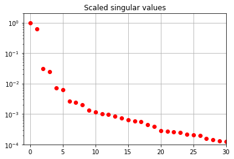
Learning SINDy models for POD mode dynamics
Unconstrained SR3 algorithm
Let’s run a quadratic SINDy model on the first 7 POD modes using the unconstrainted SR3 algorithm with an initial guess.
[6]:
r = 7
poly_order = 2
threshold = 0.05
tfrac = 0.8 # Proportion of the data to train on
M = len(t)
M_train = int(len(t) * tfrac)
t_train = t[:M_train]
t_test = t[M_train:]
pod_names = ["a{}".format(i) for i in range(1, r + 1)]
# Normalize the trajectories to the unit ball for simplicity
normalization = sum(np.amax(abs(A), axis=0)[1:r + 1])
x = np.zeros((A.shape[0], r))
plt.figure()
for i in range(r):
x[:, i] = A[:, i] / normalization
plt.subplot(r, 1, i + 1)
plt.plot(x[:, i])
# Build an initial guess
initial_guess = np.zeros((r,r + int(r * (r + 1) / 2)))
initial_guess[0, 1] = 0.091
initial_guess[1, 0] = -0.091
initial_guess[2, 3] = 0.182
initial_guess[3, 2] = -0.182
initial_guess[5, 4] = -3 * 0.091
initial_guess[4, 5] = 3 * 0.091
x_train = x[:M_train, :]
x0_train = x[0, :]
x_test = x[M_train:, :]
x0_test = x[M_train, :]
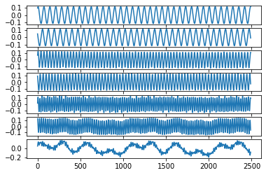
[7]:
# We need a quadratic library with particular ordering
# for the model constraints that we use later
library_functions = [lambda x:x, lambda x, y:x * y, lambda x:x ** 2]
library_function_names = [lambda x:x, lambda x, y:x + y, lambda x:x + x]
sindy_library = ps.CustomLibrary(library_functions=library_functions,
function_names=library_function_names)
# SR3 optimizer with an initial guess
sindy_opt = ps.SR3(
threshold=threshold, nu=1,
initial_guess=initial_guess, max_iter=1000
)
model = ps.SINDy(
optimizer=sindy_opt,
feature_library=sindy_library,
differentiation_method=ps.FiniteDifference(drop_endpoints=True),
feature_names=pod_names,
)
# Fit a model on the training data
model.fit(x_train, t=t_train)
model.print()
(a1)' = 0.090 a2
(a2)' = -0.091 a1
(a3)' = 0.179 a4
(a4)' = -0.179 a3
(a5)' = 0.263 a6
(a6)' = -0.263 a5
(a7)' = 0.000
[8]:
feature_names = model.get_feature_names()
fig, ax = plt.subplots(1, 1, figsize=(4, 10))
plot_coefficients(model.coefficients(),
input_features=pod_names,
feature_names=feature_names,
ax=ax);
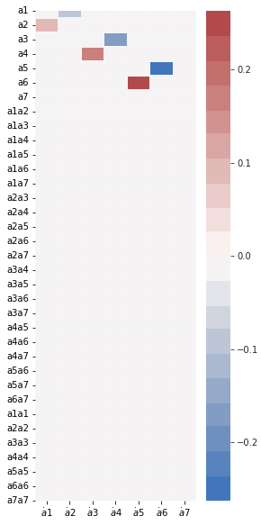
[9]:
# Get Xdot from the measurement data X
x_dot = model.differentiate(x, t=t)
# Predict Xdot on the training and testing data.
x_dot_train = model.predict(x_train)
x_dot_sim = model.predict(x_test)
print("Model score:", model.score(x, t=t))
Model score: 0.8315081674949204
[10]:
# Plot predicted derivatives
plot_trajectories(x_dot, x_dot_train, x_dot_sim, n_modes=r)
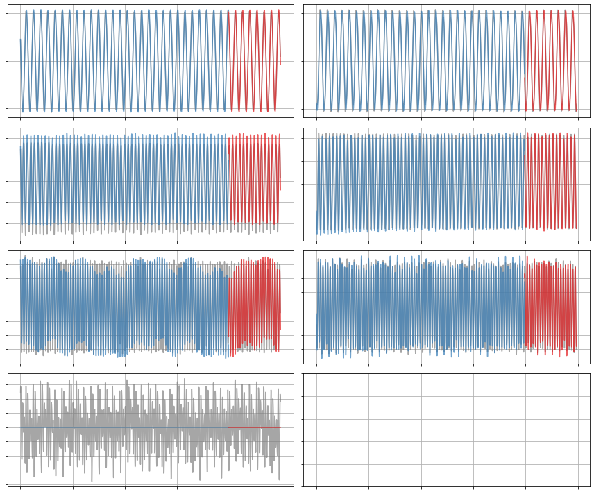
[11]:
# Forecast the testing data with this identified model
x_sim = model.simulate(x0_test, t_test)
# Compare true and simulated trajectories
plot_trajectories(x, x_train, x_sim, n_modes=r)
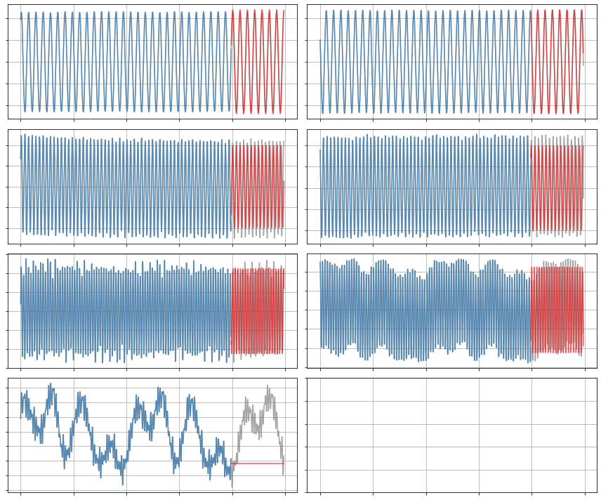
Constrained SR3 algorithm
Now let’s run a SINDy model on the first 7 modes using the constrainted SR3 algorithm with an initial guess. The constraint is that the linear part of the SINDy coefficient matrix must be anti-symmetric. Note in the resulting model, we have \(\dot a_1 = 0.091a_2,\ \dot a_2 = -0.091a_1\), and so on.
This constraint is specific to the magnetohydrodynamics (MHD) model used for the provided simulation data.
[12]:
threshold = 0.05
constraint_zeros = np.zeros(int(r * (r + 1) / 2))
constraint_matrix = np.zeros((int(r * (r + 1) / 2),
int(r * (r ** 2 + 3 * r) / 2)))
# Define the constraint matrix
q = r
for i in range(r):
constraint_matrix[i, i * (r + 1)] = 1.0
counter = 1
for j in range(i + 1, r):
constraint_matrix[q, i * r + j] = 1.0
constraint_matrix[q, i * r + j + counter * (r - 1)] = 1.0
counter += 1
q += 1
sindy_opt = ps.ConstrainedSR3(
threshold=threshold,
nu=1,
max_iter=10000,
constraint_lhs=constraint_matrix,
constraint_rhs=constraint_zeros,
constraint_order="feature",
tol=1e-6,
initial_guess=initial_guess,
)
[13]:
model = ps.SINDy(
optimizer=sindy_opt,
feature_library=sindy_library,
differentiation_method=ps.FiniteDifference(drop_endpoints=True),
feature_names=pod_names,
)
model.fit(x_train, t=t_train)
model.print()
(a1)' = 0.091 a2
(a2)' = -0.091 a1
(a3)' = 0.179 a4
(a4)' = -0.179 a3
(a5)' = 0.263 a6
(a6)' = -0.263 a5
(a7)' = 0.000
[14]:
fig, ax = plt.subplots(1, 1, figsize=(4, 10))
plot_coefficients(model.coefficients(),
input_features=pod_names,
feature_names=feature_names,
ax=ax);
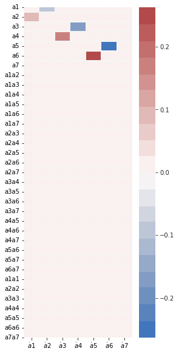
[15]:
print("Model score:", model.score(x, t=t))
Model score: 0.8315075123206278
[16]:
x_dot = model.differentiate(x, t=t)
x_dot_train = model.predict(x_train)
x_dot_sim = model.predict(x_test)
plot_trajectories(x_dot, x_dot_train, x_dot_sim, n_modes=r)
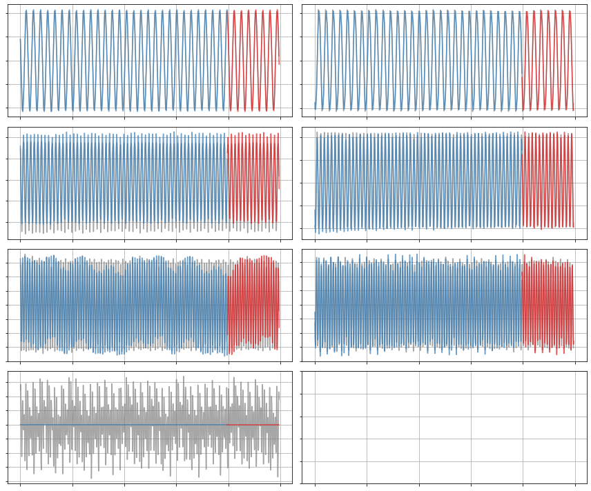
[17]:
x_sim = model.simulate(x0_test, t_test)
plot_trajectories(x, x_train, x_sim, r)
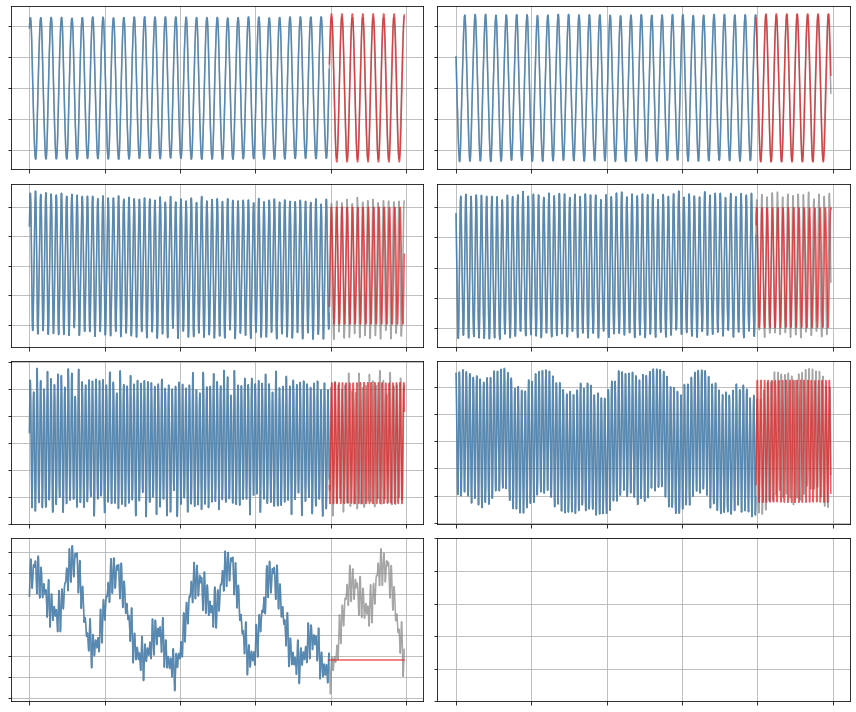
Constrained SR3 algorithm with term-dependent thresholding
Finally, we train a SINDy model on the first 7 modes using constrained SR3 with an initial guess and different thresholds for different library terms. We’ll test out two sets of thresholds.
Encourage linear terms
We’ll try get the model to emphasize linear terms by increasing thresholding on the quadratic terms.
[18]:
threshold = 0.05
# Define a matrix of thresholds
thresholder = "weighted_l0"
thresholds = threshold * np.ones((r + int(r * (r + 1) / 2), r))
# Make the thresholds for the quadratic terms very large
thresholds[r:, :] = 30 * threshold
sindy_opt = ps.ConstrainedSR3(
threshold=threshold,
nu=10,
max_iter=50000,
constraint_lhs=constraint_matrix,
constraint_rhs=constraint_zeros,
constraint_order="feature",
tol=1e-5,
thresholder=thresholder,
initial_guess=initial_guess,
thresholds=thresholds,
)
[19]:
model = ps.SINDy(
optimizer=sindy_opt,
feature_library=sindy_library,
differentiation_method=ps.FiniteDifference(drop_endpoints=True),
feature_names=pod_names,
)
model.fit(x_train, t=t_train)
model.print()
(a1)' = 0.091 a2
(a2)' = -0.091 a1
(a3)' = 0.179 a4
(a4)' = -0.179 a3
(a5)' = 0.262 a6 + -0.052 a7
(a6)' = -0.262 a5
(a7)' = 0.052 a5
[20]:
fig, ax = plt.subplots(1, 1, figsize=(4, 10))
plot_coefficients(model.coefficients(),
input_features=pod_names,
feature_names=feature_names,
ax=ax);
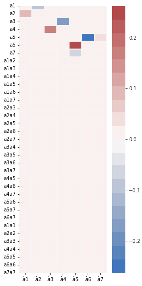
[21]:
x_dot = model.differentiate(x, t=t)
x_dot_train = model.predict(x_train)
x_dot_sim = model.predict(x_test)
print("Model score:", model.score(x, t=t))
Model score: 0.8754167424876458
[22]:
plot_trajectories(x_dot, x_dot_train, x_dot_sim, n_modes=r)
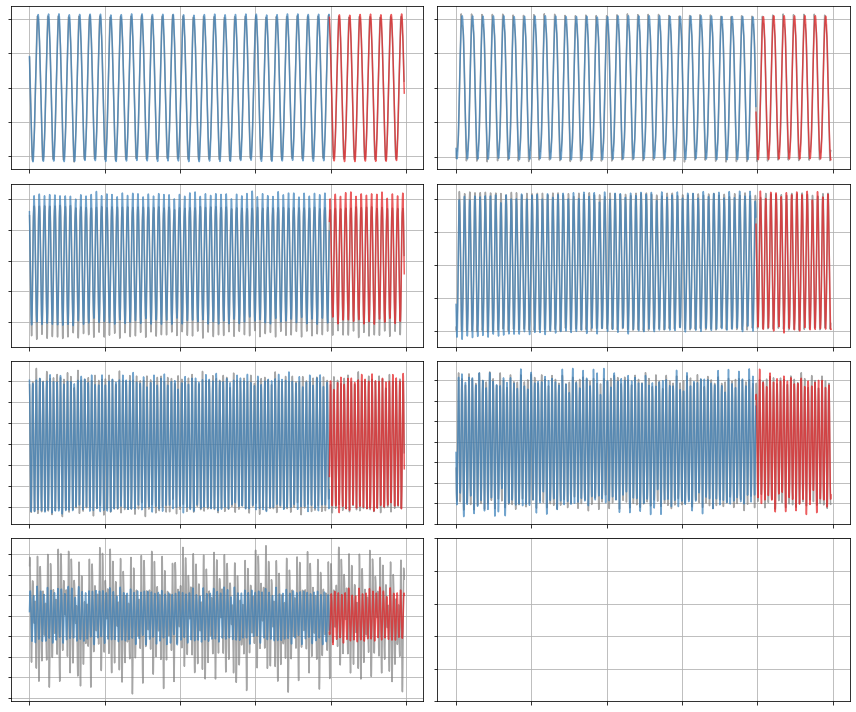
[23]:
x_sim = model.simulate(x0_test, t_test)
plot_trajectories(x, x_train, x_sim, n_modes=r)
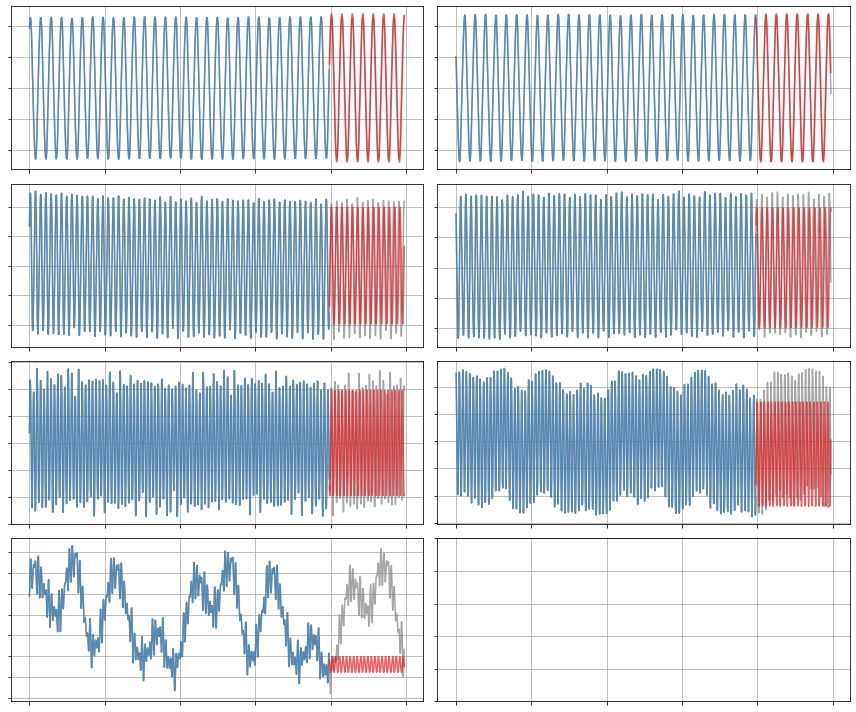
Allow some quadratic terms
The linear terms look pretty good but there are still some small errors in the frequencies and they can’t seem to capture the 7th mode. Let’s demand quadratic models for a3-a7. Although we can mess around with these thresholds for better performance, there is a limit to the progress we can make with this set of modes – modes 1-6 are close to monochromatic which will make it difficult to capture frequency dependence beyond the driving frequency and its harmonics.
[24]:
threshold = 0.05
thresholder = "weighted_l0"
thresholds = threshold * np.ones((r, r + int(r * (r + 1) / 2)))
# Try complicated set of thresholding (try playing around with these)
thresholds[0:2, r:] = 30 * threshold
thresholds[2, r:] = 0.2
thresholds[3, r:] = 0.05
thresholds[4:6, r:] = 0.03
thresholds = thresholds.T
[25]:
sindy_opt = ps.ConstrainedSR3(
threshold=threshold,
nu=10,
max_iter=50000,
constraint_lhs=constraint_matrix,
constraint_rhs=constraint_zeros,
constraint_order="feature",
tol=1e-5,
thresholder=thresholder,
initial_guess=initial_guess,
thresholds=thresholds,
)
model = ps.SINDy(
optimizer=sindy_opt,
feature_library=sindy_library,
differentiation_method=ps.FiniteDifference(drop_endpoints=True),
feature_names=pod_names,
)
model.fit(x_train, t=t_train)
model.print()
(a1)' = 0.091 a2
(a2)' = -0.091 a1
(a3)' = 0.179 a4
(a4)' = -0.179 a3 + -0.093 a1a6 + -0.090 a2a5 + -0.090 a3a4
(a5)' = 0.262 a6 + -0.052 a7 + -0.030 a2a5 + 0.049 a3a5 + 0.077 a3a7 + -0.041 a4a6
(a6)' = -0.262 a5 + -0.034 a4a6 + -0.113 a4a7
(a7)' = 0.052 a5 + 0.161 a1a5 + 0.193 a1a6 + 0.165 a2a5 + -0.150 a2a6 + 0.173 a3a4 + 0.051 a4a6 + 0.157 a3a3 + -0.165 a4a4
[26]:
fig, ax = plt.subplots(1, 1, figsize=(4, 10))
plot_coefficients(model.coefficients(),
input_features=pod_names,
feature_names=feature_names,
ax=ax);
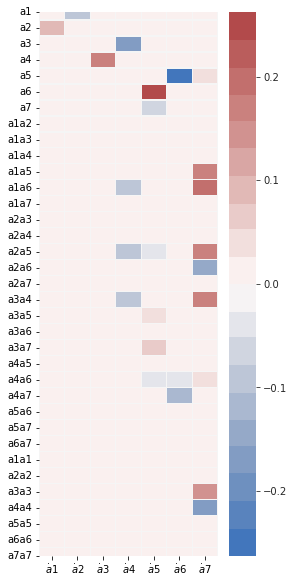
[27]:
print("Model score:", model.score(x, t=t))
Model score: 0.9579570427080192
[28]:
x_dot = model.differentiate(x, t=t)
x_dot_train = model.predict(x_train)
x_dot_sim = model.predict(x_test)
[29]:
plot_trajectories(x_dot, x_dot_train, x_dot_sim, n_modes=r)
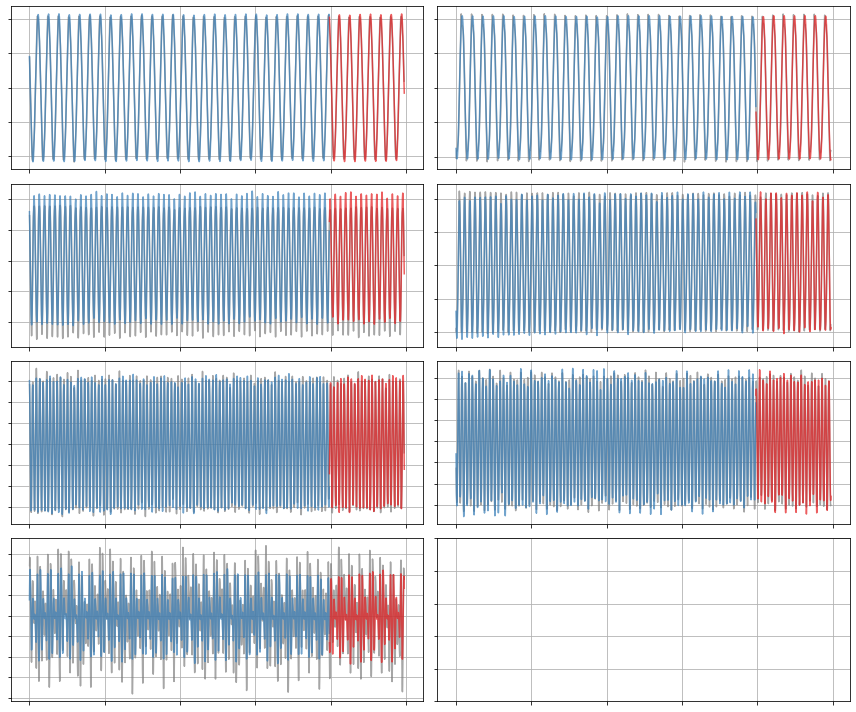
[30]:
x_sim = model.simulate(x0_test, t_test)
plot_trajectories(x, x_train, x_sim, n_modes=r)
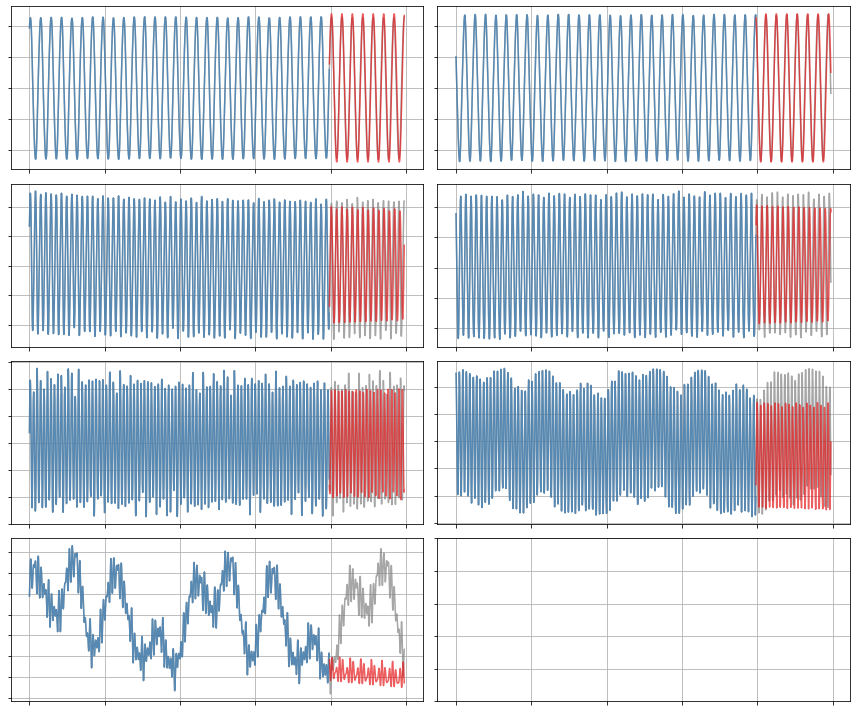
Show off quadratic constraints
Here we demonstrate linear + quadratic constraints for arbitrary r, which can be useful for some fluid and plasma systems. This is the condition the the energy is constant, dE/dt = 0, so these models are stable for arbitrary r. Thus we show a r=16 model below, although care must be taken to scan \(\lambda\), to avoid overfitting. Note that the variable thresholding will mess up the quadratic constraints so that is omitted here.
[31]:
r = 16
N_constraints = int(r * (r + 1) / 2) + r + r * (r - 1) + int(
r * (r - 1) * (r - 2) / 6.0)
if poly_order == 2:
constraint_zeros = np.zeros(N_constraints)
constraint_matrix = np.zeros((N_constraints,
int(r * (r ** 2 + 3 * r) / 2)))
# Set the diagonal part of the linear coefficient matrix to be zero
for i in range(r):
constraint_matrix[i, i * (r + 1)] = 1.0
q = r
# Enforce anti-symmetry in the linear coefficient matrix
for i in range(r):
counter = 1
for j in range(i + 1, r):
constraint_matrix[q, i * r + j] = 1.0
constraint_matrix[q, i * r + j + counter * (r - 1)] = 1.0
counter = counter + 1
q = q + 1
# Set coefficients adorning terms like a_i^3 to zero
for i in range(r):
constraint_matrix[q, r * (int((r ** 2 + 3 * r) / 2.0) - r) + i * (r + 1)] = 1.0
q = q + 1
# Set coefficients adorning terms like a_ia_j^2 to be antisymmetric
for i in range(r):
for j in range(i + 1, r):
constraint_matrix[q, r * (int((r ** 2 + 3 * r) / 2.0) - r + j) + i] = 1.0
constraint_matrix[q, r * (r + j - 1) + j + r * int(i * (2 * r - i - 3) / 2.0)] = 1.0
q = q + 1
for i in range(r):
for j in range(i):
constraint_matrix[q, r * (int((r **2 + 3 * r) / 2.0) - r + j) + i] = 1.0
constraint_matrix[q, r * (r + i - 1) + j + r * int(j * (2 * r - j - 3) / 2.0)] = 1.0
q = q + 1
# Set coefficients adorning terms like a_ia_ja_k to be antisymmetric
for i in range(r):
for j in range(i + 1, r):
for k in range(j + 1, r):
constraint_matrix[q, r * (r + k - 1) + i + r * int(j * (2 * r - j - 3) / 2.0)] = 1.0
constraint_matrix[q, r * (r + k - 1) + j + r * int(i * (2 * r - i - 3) / 2.0)] = 1.0
constraint_matrix[q, r * (r + j - 1) + k + r * int(i * (2 * r - i - 3) / 2.0)] = 1.0
q = q + 1
# Normalize the trajectories to the unit ball for simplicity
normalization = sum(np.amax(abs(A), axis=0)[1:r + 1])
pod_names = ["a{}".format(i) for i in range(1, r + 1)]
x = np.zeros((A.shape[0], r))
plt.figure()
for i in range(r):
x[:, i] = A[:, i] / normalization
plt.subplot(r, 1, i+1)
plt.plot(x[:, i])
# Build an initial guess
initial_guess = np.zeros((r, r + int(r * (r + 1) / 2)))
initial_guess[0, 1] = 0.091
initial_guess[1, 0] = -0.091
initial_guess[2, 3] = 0.182
initial_guess[3, 2] = -0.182
initial_guess[5, 4] = -3 * 0.091
initial_guess[4, 5] = 3 * 0.091
x_train = x[:M_train, :]
x0_train = x[0, :]
x_test = x[M_train:, :]
x0_test = x[M_train, :]
sindy_opt = ps.ConstrainedSR3(
threshold=0.004,
nu=1,
max_iter=600,
constraint_lhs=constraint_matrix,
constraint_rhs=constraint_zeros,
constraint_order="feature",
tol=1e-5,
thresholder='l0',
initial_guess=initial_guess,
)
model = ps.SINDy(
optimizer=sindy_opt,
feature_library=sindy_library,
differentiation_method=ps.FiniteDifference(drop_endpoints=True),
feature_names=pod_names,
)
model.fit(x_train, t=t_train, quiet=True)
model.print()
(a1)' = 0.091 a2 + 0.009 a5
(a2)' = -0.091 a1 + 0.008 a5 + -0.011 a6
(a3)' = 0.179 a4 + 0.007 a7 + -0.024 a8 + 0.026 a9
(a4)' = -0.179 a3 + 0.009 a7 + -0.027 a8 + -0.014 a9
(a5)' = -0.009 a1 + -0.008 a2 + 0.263 a6 + -0.051 a7 + -0.012 a8 + 0.007 a12 + 0.008 a14 + 0.014 a16
(a6)' = 0.011 a2 + -0.263 a5 + 0.008 a12 + 0.011 a15 + -0.016 a16
(a7)' = -0.007 a3 + -0.009 a4 + 0.051 a5 + -0.009 a8 + 0.077 a9 + 0.010 a10 + -0.008 a11 + -0.009 a12 + 0.013 a15 + 0.006 a16
(a8)' = 0.024 a3 + 0.027 a4 + 0.012 a5 + 0.009 a7 + -0.332 a9 + -0.042 a10 + 0.029 a11 + 0.021 a13 + -0.030 a1a14 + 0.053 a2a12
(a9)' = -0.026 a3 + 0.014 a4 + -0.077 a7 + 0.332 a8 + 0.031 a10 + 0.011 a11 + -0.032 a13 + 0.007 a16 + -0.134 a2a14
(a10)' = -0.010 a7 + 0.042 a8 + -0.031 a9 + 0.083 a11 + -0.031 a13 + -0.014 a14 + -0.007 a16
(a11)' = 0.008 a7 + -0.029 a8 + -0.011 a9 + -0.083 a10 + 0.010 a13 + -0.021 a14
(a12)' = -0.007 a5 + -0.008 a6 + 0.009 a7 + 0.415 a14 + 0.020 a15 + -0.020 a16 + -0.053 a2a8
(a13)' = -0.021 a8 + 0.032 a9 + 0.031 a10 + -0.010 a11 + 0.014 a14
(a14)' = -0.008 a5 + 0.014 a10 + 0.021 a11 + -0.415 a12 + -0.014 a13 + 0.068 a15 + -0.072 a16 + 0.030 a1a8 + 0.133 a2a9
(a15)' = -0.011 a6 + -0.013 a7 + -0.020 a12 + -0.068 a14 + 0.017 a16
(a16)' = -0.014 a5 + 0.016 a6 + -0.006 a7 + -0.007 a9 + 0.007 a10 + 0.020 a12 + 0.072 a14 + -0.017 a15
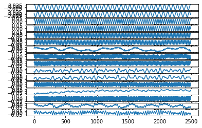
[32]:
fig, ax = plt.subplots(1, 1, figsize=(4, 10))
plot_coefficients(model.coefficients(),
input_features=pod_names,
feature_names=feature_names,
ax=ax);
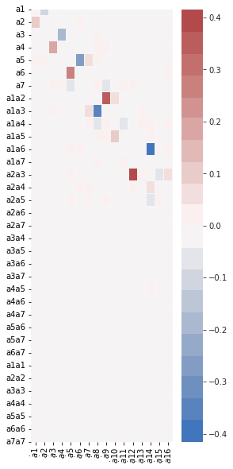
[33]:
print("Model score:", model.score(x, t=t))
Model score: 0.8738485575128806
[34]:
x_dot = model.differentiate(x, t=t)
x_dot_train = model.predict(x_train)
x_dot_sim = model.predict(x_test)
[35]:
plot_trajectories(x_dot, x_dot_train, x_dot_sim, n_modes=r)
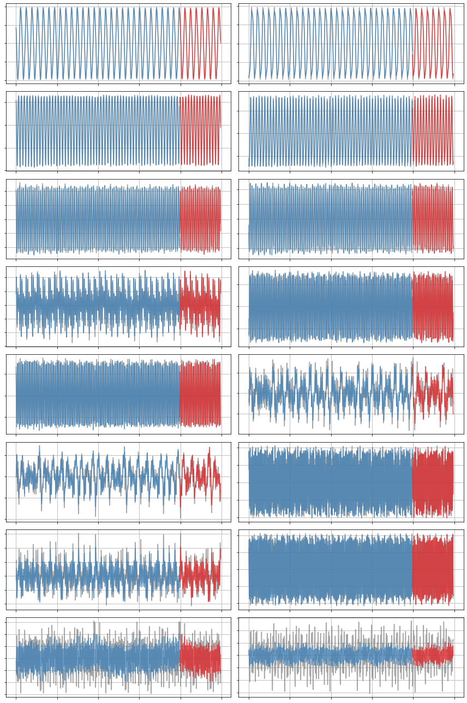
[36]:
x_sim = model.simulate(x0_test, t_test)
plot_trajectories(x, x_train, x_sim, n_modes=r)
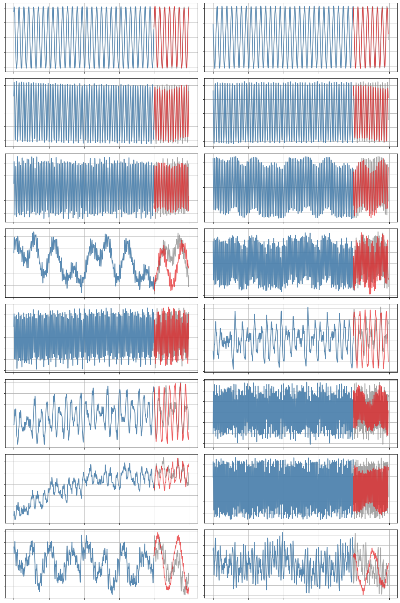
Mapping out the (r,\(\lambda\)) model landscape
Generate a Pareto curve to map out the (r,\(\lambda\)) model space. This shows how the quality of the model-building changes as the number of modes (r) changes, and as the amount of sparsity varies (\(\lambda\)). In general, Pareto curves are made to identify the optimal tradeoff between the number of free parameters, and the prediction error. For us, both \(r\) and \(\lambda\) determine how many free parameters to use, since the largest set of free parameters here, the matrix of quadratic terms, scales like \(O(r^3)\), and then \(\lambda\) zeros out some subset of this matrix.
Below, we compare the unconstrained model space with the fully constrained model space. The variable thresholding is not compatible with the constraints, so we omit it for both cases here. There are three primary regions that show up in these plots: unstable models, stable models, and “too sparse” (ineffective) models. It indicates that model instability is common in the unconstrained models, although these models may be useful for short times. The fully constrained models conserve energy, and thus are stable for arbitrary state size (there is no unstable region). Moreover, there is considerable ongoing research in improving the robustness of these model discovery algorithms.
[37]:
lambda_length = 50
threshold = 0.005
# Threshold values to map out
pareto_thresholds = np.linspace(
0.0, 30.0 * threshold, lambda_length
)
poly_order = 2
tfrac = 0.8
rmax = 13
M = len(t)
M_train = int(len(t) * tfrac)
t_train = t[:M_train]
t_test = t[M_train:]
# Scanning models (coupled, quadratically nonlinear ODEs) with 3-14 modes
r_scan = range(3, rmax)
r_length = len(r_scan)
rl_errs = np.zeros((r_length, lambda_length, 5))
for r_current in r_scan:
print("r = ", r_current)
energies = S[:r_current]
pod_names = ["a{}".format(i) for i in range(1, r_current + 1)]
# Normalize the trajectories to the unit ball for simplicity
normalization = sum(np.amax(abs(A), axis=0)[1:r_current + 1])
x = A[:, :r_current] / normalization
# Build an initial guess
initial_guess = np.zeros(
(r_current, r_current + int(r_current * (r_current + 1) / 2))
)
initial_guess[0, 1] = 0.091
initial_guess[1, 0] = -0.091
# Split data into training and testing
x_train = x[:M_train, :]
x0_train = x[0, :]
x_test = x[M_train:, :]
x0_test = x[M_train, :]
# Special library ordering needed again if constraints are used
library_functions = [lambda x: x, lambda x, y: x * y, lambda x: x ** 2]
library_function_names = [lambda x: x, lambda x, y: x + y, lambda x: x + x]
sindy_library = ps.CustomLibrary(
library_functions=library_functions,
function_names=library_function_names
)
sindy_opt = ps.ConstrainedSR3(
threshold=threshold, nu=1,
initial_guess=initial_guess,
max_iter=1000
)
rl_errs[r_current - r_scan[0], :, :] = pareto_curve(
sindy_opt,
sindy_library,
ps.FiniteDifference,
feature_names,
discrete_time=False,
thresholds=pareto_thresholds,
x_fit=x_train,
x_test=x_test,
t_fit=t_train,
t_test=t_test,
energies=energies,
)
r = 3
r = 4
r = 5
r = 6
r = 7
r = 8
r = 9
r = 10
r = 11
r = 12
[38]:
# Plot how the model scores, and normalized Xdot frobenius error
# change as the threshold (or number of nonzero terms) is changed
from matplotlib.colors import LogNorm
nonzeros = np.zeros((r_length, lambda_length))
scores = np.zeros((r_length, lambda_length))
xerr = np.zeros((r_length, lambda_length))
xdoterr = np.zeros((r_length, lambda_length))
alpha = 0.7
for i in r_scan:
nonzero_coeffs = rl_errs[i - r_scan[0], :, 0]
thresholds = rl_errs[i - r_scan[0], :, 1]
model_scores = rl_errs[i - r_scan[0], :, 2]
x_err = rl_errs[i - r_scan[0], :, 3]
xdot_err = rl_errs[i - r_scan[0], :, 4]
nonzeros[i - r_scan[0], :] = nonzero_coeffs
scores[i - r_scan[0], :] = model_scores
xerr[i - r_scan[0], :] = x_err
xdoterr[i - r_scan[0], :] = xdot_err
fig, axs = plt.subplots(2, 1, figsize=(14, 10))
for ax in axs:
ax.grid(True)
axs[1].legend(bbox_to_anchor=(1.05, 1), loc="upper left")
fig.tight_layout()
fig.show()
X, Y = np.meshgrid(
np.linspace(r_scan[0], r_scan[-1] + 1, r_length) - 0.5,
thresholds,
indexing="ij",
)
# truncate exploding errors at 1e2 for visualization's sake
xerr[np.isnan(xerr)] = 1e1
xerr[xerr > 1e1] = 1e1
xdoterr[np.isnan(xdoterr)] = 1e1
xdoterr[xdoterr > 1e1] = 1e1
c0 = axs[0].pcolor(
X,
Y,
xerr,
norm=LogNorm(vmin=1e-1, vmax=1e1),
cmap="coolwarm",
edgecolors="k",
linewidths=1,
)
fs = 22
axs[0].set_xticklabels([])
axs[0].set_yticks([0, 0.05, 0.1, 0.15])
axs[0].set_yticklabels(['0.00', '0.05', '0.10', '0.15'], fontsize=fs)
axs[0].set_ylabel(r"$\lambda$ (model sparsity)",fontsize=fs)
axs[0].text(1.15, 0.65, r'$||X_{true}-X_{pred}||_F$',
transform=axs[0].transAxes,
fontsize=fs, verticalalignment='top')
cbar = fig.colorbar(c0, ax=axs[0])
cbar.ax.tick_params(labelsize=fs)
c1 = axs[1].pcolor(
X,
Y,
xdoterr,
norm=LogNorm(vmin=1e-2, vmax=1e0),
cmap="coolwarm",
edgecolors="k",
linewidths=1,
)
axs[1].set_xticks([4,6,8,10,12])
axs[1].set_xticklabels([4,6,8,10,12])
axs[1].set_yticks([0, 0.05, 0.1, 0.15])
axs[1].set_yticklabels(['0.00', '0.05', '0.10', '0.15'])
axs[1].set_xlabel("r (model size)", fontsize=fs)
axs[1].set_ylabel(r"$\lambda$ (model sparsity)", fontsize=fs)
axs[1].text(1.15, 0.65, r'$||\dot{X}_{true}-\dot{X}_{pred}||_F$',
transform=axs[1].transAxes,
fontsize=fs, verticalalignment='top')
cbar = fig.colorbar(c1, ax=axs[1])
cbar.ax.tick_params(labelsize=fs)
fig.show()
No handles with labels found to put in legend.
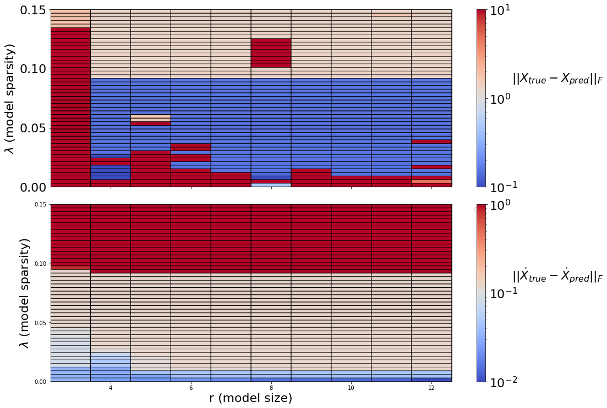
[39]:
# Scanning models (coupled, quadratically nonlinear ODEs) with 3-14 modes
rl_errs = np.zeros((r_length, lambda_length, 5))
q = 0
for r in r_scan:
energies = S[:r]
N_constraints = int(r * (r + 1) / 2) + r + r * (r - 1) + int(
r * (r - 1) * (r - 2) / 6.0)
constraint_zeros = np.zeros(N_constraints)
constraint_matrix = np.zeros((N_constraints,
int(r * (r ** 2 + 3 * r) / 2)))
# Set the diagonal part of the linear coefficient matrix to be zero
for i in range(r):
constraint_matrix[i, i * (r + 1)] = 1.0
q = r
# Enforce anti-symmetry in the linear coefficient matrix
for i in range(r):
counter = 1
for j in range(i + 1, r):
constraint_matrix[q, i * r + j] = 1.0
constraint_matrix[q, i * r + j + counter * (r - 1)] = 1.0
counter = counter + 1
q = q + 1
# Set coefficients adorning terms like a_i^3 to zero
for i in range(r):
constraint_matrix[q, r * (int((r ** 2 + 3 * r) / 2.0) - r) + i * (r + 1)] = 1.0
q = q + 1
# Set coefficients adorning terms like a_ia_j^2 to be antisymmetric
for i in range(r):
for j in range(i + 1, r):
constraint_matrix[q, r * (int((r ** 2 + 3 * r) / 2.0) - r + j) + i] = 1.0
constraint_matrix[q, r * (r + j - 1) + j + r * int(i * (2 * r - i - 3) / 2.0)] = 1.0
q = q + 1
for i in range(r):
for j in range(i):
constraint_matrix[q, r * (int((r ** 2 + 3 * r) / 2.0) - r + j) + i] = 1.0
constraint_matrix[q, r * (r + i - 1) + j + r * int(j * (2 * r - j - 3) / 2.0)] = 1.0
q = q + 1
# Set coefficients adorning terms like a_ia_ja_k to be antisymmetric
for i in range(r):
for j in range(i + 1, r):
for k in range(j + 1, r):
constraint_matrix[q, r * (r + k - 1) + i + r * int(j * (2 * r - j - 3) / 2.0)] = 1.0
constraint_matrix[q, r * (r + k - 1) + j + r * int(i * (2 * r - i - 3) / 2.0)] = 1.0
constraint_matrix[q, r * (r + j - 1) + k + r * int(i * (2 * r - i - 3) / 2.0)] = 1.0
q = q + 1
print("r = ", r)
pod_names = ["a{}".format(i) for i in range(1, r + 1)]
# Normalize the trajectories to the unit ball for simplicity
normalization = sum(np.amax(abs(A), axis=0)[1:r + 1])
x = A[:, :r] / normalization
# Build an initial guess
initial_guess = np.zeros(
(r, r + int(r * (r + 1) / 2))
)
initial_guess[0, 1] = 0.091
initial_guess[1, 0] = -0.091
# Split data into training and testing
x_train = x[:M_train, :]
x0_train = x[0, :]
x_test = x[M_train:, :]
x0_test = x[M_train, :]
# Special library ordering needed again if constraints are used
library_functions = [lambda x: x, lambda x, y: x * y, lambda x: x ** 2]
library_function_names = [lambda x: x, lambda x, y: x + y, lambda x: x + x]
sindy_library = ps.CustomLibrary(
library_functions=library_functions,
function_names=library_function_names
)
sindy_opt = ps.ConstrainedSR3(
threshold=0.01,
nu=1,
max_iter=2000,
constraint_lhs=constraint_matrix,
constraint_rhs=constraint_zeros,
constraint_order="feature",
tol=1e-5,
thresholder='l0',
initial_guess=initial_guess,
)
rl_errs[r - r_scan[0], :, :] = pareto_curve(
sindy_opt,
sindy_library,
ps.FiniteDifference,
feature_names,
discrete_time=False,
thresholds=pareto_thresholds,
x_fit=x_train,
x_test=x_test,
t_fit=t_train,
t_test=t_test,
energies=energies,
)
r = 3
r = 4
r = 5
r = 6
r = 7
r = 8
r = 9
r = 10
r = 11
r = 12
[40]:
# Plot how the model scores, and Xdot frobenius error
# change as the threshold (or number of nonzero terms) is changed
from matplotlib.colors import LogNorm
nonzeros = np.zeros((r_length, lambda_length))
scores = np.zeros((r_length, lambda_length))
xerr = np.zeros((r_length, lambda_length))
xdoterr = np.zeros((r_length, lambda_length))
alpha = 0.7
for i in r_scan:
nonzero_coeffs = rl_errs[i - r_scan[0], :, 0]
thresholds = rl_errs[i - r_scan[0], :, 1]
model_scores = rl_errs[i - r_scan[0], :, 2]
x_err = rl_errs[i - r_scan[0], :, 3]
xdot_err = rl_errs[i - r_scan[0], :, 4]
nonzeros[i - r_scan[0], :] = nonzero_coeffs
scores[i - r_scan[0], :] = model_scores
xerr[i - r_scan[0], :] = x_err
xdoterr[i - r_scan[0], :] = xdot_err
for ax in axs:
ax.grid(True)
axs[1].legend(bbox_to_anchor=(1.05, 1), loc="upper left")
fig.tight_layout()
fig.show()
fig, axs = plt.subplots(2, 1, figsize=(14, 10))
X, Y = np.meshgrid(
np.linspace(r_scan[0], r_scan[-1] + 1, r_length) - 0.5,
thresholds,
indexing="ij",
)
# truncate exploding errors at 1e2 for visualization's sake
xerr[np.isnan(xerr)] = 1e1
xerr[xerr > 1e1] = 1e1
xdoterr[np.isnan(xdoterr)] = 1e1
xdoterr[xdoterr > 1e1] = 1e1
c0 = axs[0].pcolor(
X,
Y,
xerr,
norm=LogNorm(vmin=1e-1, vmax=1e1),
cmap="coolwarm",
edgecolors="k",
linewidths=1,
)
fs = 22
axs[0].set_xticklabels([])
axs[0].set_yticks([0, 0.05, 0.1, 0.15])
axs[0].set_yticklabels(['0.00', '0.05', '0.10', '0.15'], fontsize=fs)
axs[0].set_ylabel(r"$\lambda$ (model sparsity)",fontsize=fs)
axs[0].text(1.15, 0.65, r'$||X_{true}-X_{pred}||_F$',
transform=axs[0].transAxes,
fontsize=22, verticalalignment='top')
cbar = fig.colorbar(c0, ax=axs[0])
cbar.ax.tick_params(labelsize=fs)
c1 = axs[1].pcolor(
X,
Y,
xdoterr,
norm=LogNorm(vmin=1e-2, vmax=1e0),
cmap="coolwarm",
edgecolors="k",
linewidths=1,
)
axs[1].set_xticks([4,6,8,10,12])
axs[1].set_xticklabels([4,6,8,10,12], fontsize=fs)
axs[1].set_yticks([0, 0.05, 0.1, 0.15])
axs[1].set_yticklabels(['0.00', '0.05', '0.10', '0.15'], fontsize=fs)
axs[1].set_xlabel("r (model size)", fontsize=fs)
axs[1].set_ylabel(r"$\lambda$ (model sparsity)", fontsize=fs)
axs[1].text(1.15, 0.65, r'$||\dot{X}_{true}-\dot{X}_{pred}||_F$',
transform=axs[1].transAxes,
fontsize=fs, verticalalignment='top')
cbar = fig.colorbar(c1, ax=axs[1])
cbar.ax.tick_params(labelsize=fs)
fig.show()
No handles with labels found to put in legend.
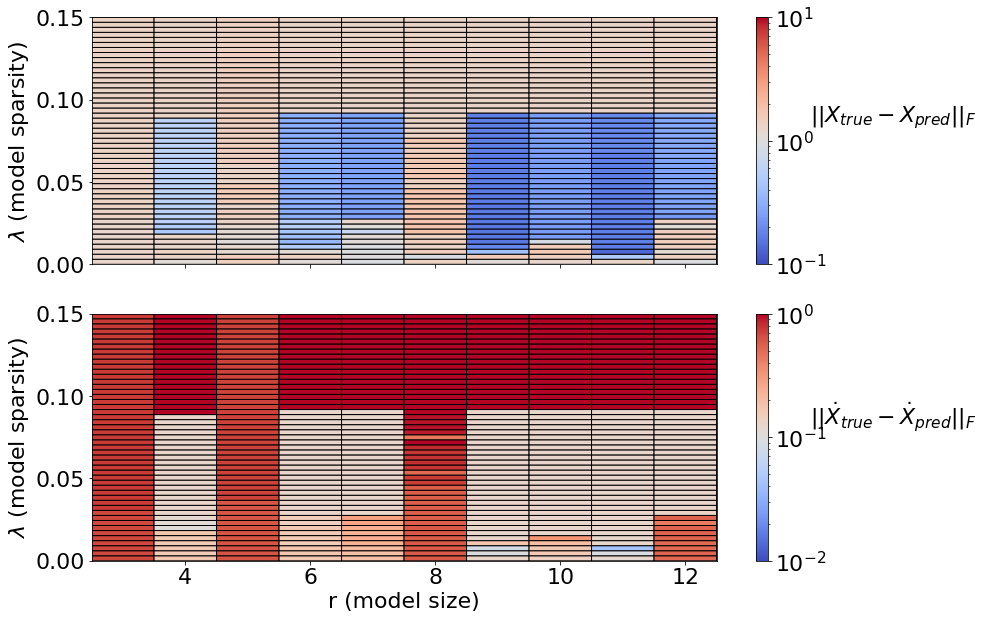